卍新纂大日本續藏經 第59冊
No.1080 瑜伽集要施食儀軌 (1卷)
【明 袾宏重訂】
第 1 卷
No. 1080-A
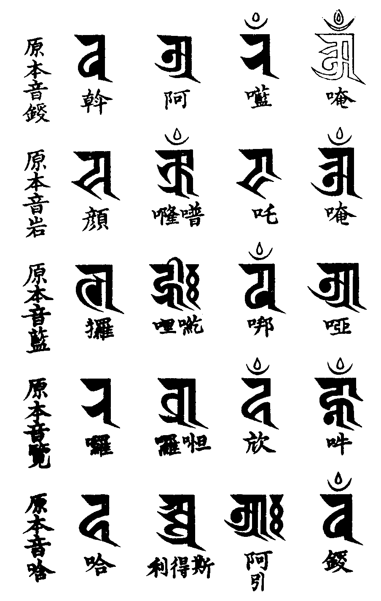
瑜伽法門。皆從梵書字種起觀。出生一切廣大神變。普利有情。此本首列二十字。行者切須觀想純熟。方可登壇作法。其字結搆。均有天然軌則。不容毫髮差殊。查寶華原本。與竺乾體格。已未全合。後人翻刻。失之逾遠。今照龍藏。悉心考訂。其前三行。計十五字。均已改定。最後一行五字。尚有闕疑處。附贅數語。伏願高明之士。深探法海者。再為訂正。是所深幸 va 音斡。若加ṃ 則音鎪 ya 音耶。又音顏。顏與岩音相似。若加ṃ 亦音顏 la 音攞。亦音辣。原本作kha 音藍。查明藏la 字多書作la 。其音藍者。未知何據 ra 音囉。若加ṃ 則音覽 ha 音賀。又音哈。若加ṃ 則音唅 又施食儀觀中。有trāṃ 音得囕(二合)。即是trā 上加ṃ 。學者應知。
曼拏羅
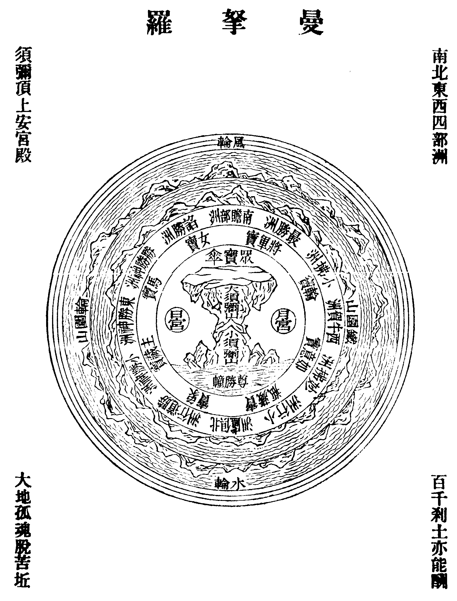
右手結契指度 左手結契指度
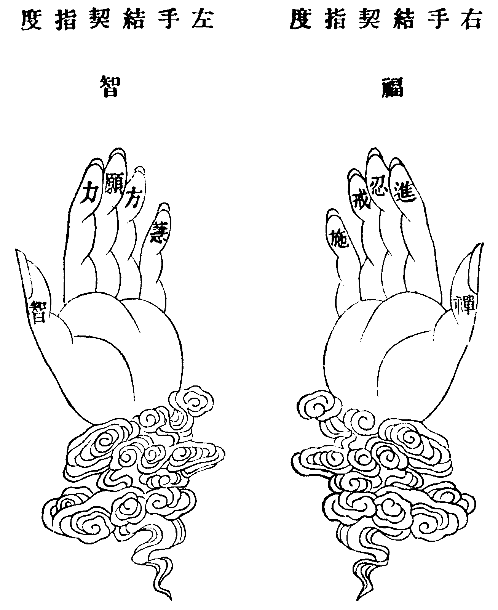
瑜伽施食法。藏有多本。其最初唯佛示阿難陀羅尼一章而已。而教令誦之二十一徧。即今變食真言是也。嗣是則漸增。增而至坊間所稱瑜伽集要。而詳矣盡矣。不可以復增矣。乃時師更附益以外集。繁衍叢沓。浸失古意。舉其甚。如梵五供養。夫布思必度必等。已皆梵語。何得梵而又梵。如三十五印。夫印必有所受。五十三佛。一佛一印。未委出自何經。遂使強半光陰。閒雜哦咏。而切要處。反速過如流泉。豈不徒勞而無功哉。況板以歲久模糊。先佛字種。漫不可別識。而捨刻就抄者。又於昔賢箋註。刪削殆盡。且字種滅。則觀何從生。註去。則觀雖存而莫知所以用。近有起而正之者。但後先猶或失次。雅俗尚未全釐。識者病焉。茲心弦居士包君。發廣大心。聚諸劂生。將徧刻經律論藏。以補前人所不及。因舉此屬予。予依集要。而重加參定。以成善本。庶登壇者。知三業相應之謂瑜伽。手之所結。必端必嚴。毋拈弄舞揚而類戲掉。口之所誦。必真必正。毋扭捏彈咤而淆密語。意之所作。必精必專。毋散心亂想而虧正觀。夫然後身與口協。口與意符。意與身會。而以此度生。亦以此自度。功德不可思議。瑜伽行人。願相與諦審而力行之。
No. 1080
修設瑜伽集要施食壇儀
此一瓣香。不從天降。豈屬地生。兩儀未判之先。根源充塞三界。一氣纔分之後。枝葉徧滿十方。超日月之光華。奪山川之秀麗。即戒即定即慧。非木非火非煙。收來在一微塵。散去普熏法界。爇向爐中。專伸供養。常住三寶。剎海萬靈。歷代祖師。一切聖眾。河沙品類。幽顯聖凡。悉仗真香。普同供養。
佛面猶如淨滿月 亦如千日放光明
圓光普照於十方 喜捨慈悲皆具足
南無盡虗空徧法界過現未來佛法僧三寶。
(表白舉)。
南無大悲觀世音菩薩(眾和畢行人祝水文)。
夫此水者。八功德水自天真。先洗眾生業垢塵。徧入毗盧華藏界。箇中何處不超淪。水不洗水。妙極法身。塵不染塵。返作自己。蠲除器界。蕩滌壇場。灑枯木而作陽春。潔穢邦而成淨土。所謂道內外中間無濁穢。聖凡幽顯總清涼。
(大眾同聲誦大悲神呪。表白舉)。
甘露王菩薩摩訶薩。
淨法界真言
(誦真言時。調伏身心。想頂臍兩處。具唵[嚂-皿+見]二字。令清淨故。以表福智圓滿)。
唵囕。唵藍。莎訶 oṃ 唵raṃ [口*藍]
點淨真言
(誦真言時。用右手無名指。搵取香水。彈灑虛空。并塗掌。想壇膓內外。悉令清淨)。
唵。啞穆葛拶囉。彌麻迎。蘇嚕蘇嚕莎訶
加持花米真言
(誦真言時。手拈花米三次。想成光明種。出生金銀璧玉珍寶之雲)。
唵。斡資囉。[口*普][口*彌]啞吽
加持鈴杵真言
(誦真言時。手拈花米。灑在鈴杵上。想成智慧種)。
唵。斡資囉。薩答啞吽
唵。斡資囉。看吒啞吽
唵啞吽
十二因緣呪
(持杵振鈴語)。
唵。耶答兒麻(二合)兮都。不囉巴斡兮。敦的山。答塔葛答歇斡怛的山。拶約尼嚕怛耶[口*邦]叭諦。麻曷釋囉(二合)麻納耶。莎訶
(置鈴於案。右手取花米。誦云)。
我及法界一切有情。從今為始。乃至未證菩提之間。誓願歸依金剛上師三寶。
上師三寶真言
捺謨孤嚕(二合)毗耶(二合)
捺謨勃塔耶
捺謨達而麻耶
捺謨桑渴耶
唵哩哩哈哈吽吽癹怛
唵失哩麻哈歌羅哈哈吽吽癹怛莎訶
唵啞吽(將手持的花米。散灑虗空。想所落花米。悉成華香供養等雲。撫尺一下。誦云)
羅列香花建寶壇 重重佛境一毫端
心融妙理虗空小 道契真如法界寬
相好慈悲秋月滿 化身騰運暮雲繁
香煙堆裏瞻應現 萬象森羅海印含
(振鈴念自性偈)
方便自性不壞體 金剛不壞大勇識
最勝無比超出相 今此所作皆成就
勝慧自性甚深性 演說最上法輪音
以無生現方便身 今此所作願得成
(淨地偈)
一切方隅所有地 瓦礫砂磧等皆無
璃瑠寶地平如掌 柔輭微妙願安住
猶如極樂國莊嚴 妙寶為地眾華敷
園林池沼無缺少 以大法音願具足
從出世間復能現 種種七寶之所成
無量光明徧照處 諸佛菩薩願安住
音樂呪
唵。斡資囉。看支夷(二合)。囉納囉納。不囉(二合)囉納。不囉(二合)囉納。三不囉(二合)囉納。三不囉(二合)囉納。薩哩斡(二合)。孛塔赤的囉(二合)。不囉拶哩答。麻曷不囉(二合)。尼牙(二合)巴囉。蔑答那達速巴微。薩哩斡(二合)。塔哩麻(二合)。紇哩(二合)達耶。傘多沙納。葛哩。吽吽。癹吒莎訶
(置鈴於案。用右手無名指取香水。彈灑曼拏囉上)。
唵。斡資囉(二合)。麻明啞吽(彈三徧)
(次右手無名指取香水。於曼拏囉上右旋作一圓相。表福智圓滿故)。
唵。斡資囉(二合)。烏怛葛啞吽
(就念真言一徧。作圓相一帀。次加持花米成光明種。如用之時。悉成如意珍寶供具)。
唵。斡資囉(二合)。普彌啞吽
(念真言時。以右手拈花米。三次畢。次手拈花米。放曼拏囉上。右旋灑散。如空注雨)。
輪圍山鐵圍山
唵。斡資囉(二合)。哩契啞吽
金剛地。勝金剛地基。吽字而作擁護。
(次排列花米位。從中央起)。
戰唅彌囉微捺麻(大須彌山)
唵唅斯克徹(二合)麻彌囉微捺麻(小須彌山)
唵岩晡兒斡(二合)微的葛耶捺麻(東勝神洲)
唵岩的葛耶捺麻(小勝神洲)
唵岩微的葛耶捺麻(勝勝身洲)
唵[卄/覽]咱晡的癹耶捺麻(南贍部洲)
唵[卄/覽]沙茶耶捺麻(諂勝洲)
唵[卄/覽]烏答囉曼的哩(二合)尼耶捺麻(最勝洲)
唵藍啞咓囉孤答(二合)尼耶捺麻(西牛貨洲)
唵藍拶(二合)麻囉耶捺麻(小拂洲)
唵藍斡囉拶(二合)麻囉耶捺麻(妙拂洲)
唵錽烏答囉孤囉尼捺麻(北俱盧洲)
唵錽孤囉微捺麻(小行洲)
唵錽葛囉斡(二合)耶捺麻(勝道行洲)
唵巖葛拶囉的捺(二合)耶捺麻(象寶)
唵囕[口*普]嚕沙哳囉的捺(二合)耶捺麻(主藏寶)
唵囕斡節囉的捺(二合)耶捺麻(馬寶)
唵錽斯的哩(二合)囉的捺(二合)耶捺麻(女寶)
唵巖葛吒葛(二合)囉的捺(二合)耶捺麻(將軍寶)
唵囕吒吃囉(二合)囉的捺(二合)耶捺麻(輪寶)
唵[口*藍]麻尼囉的捺(二合)耶捺麻(如意寶)
唵錽麻曷聶塔捺耶捺麻(寶藏瓶)
唵啞斯哩(二合)牙耶捺麻(日宮)
唵[口*藍]昝的囉耶捺麻(月宮)
唵啞吽捺麻(眾寶傘)
唵薩哩斡(二合)囉的尼(二合)毗藥(二合)捺麻(尊勝幢)
唵。室哩(二合)麻忒(二合)。斡資囉。孤嚕拶囉。捺葛麻辢耶。三貌克答。捺啞斡癹。薩拏葛囉(二合)耶。吽。捺麻
(念真言時。將花花臨曼拏囉上。及散灑虗空。想所落寶米。悉成種種宮殿園林池沼。傘葢幡幢。衣服瓔珞。如意珠寶。莊嚴等具。如空注雨。相續不斷。供養上師三寶。中圍手取花米散灑虗空。念云)。
人天所有種種供物。
唵。薩哩斡(二合)。答塔葛達囉的捺。麻曷曼答囉(二合)。布拶彌渴薩謨的囉(二合)。斯癹囉納。三麻耶啞吽
(結印念呪)。
唵。薩哩斡(二合)。答塔葛達。薩叭哩咓囉(啞哩干巴丹)。巴囉(二合)諦拶耶。莎訶
(運轉結蓮花手印。念五供養)。
唵。薩哩斡(二合)。答塔曷達。薩叭哩咓囉
唵。斡資囉。不思必啞吽(花淡紅色)
唵。斡資囉。度必啞吽(香黃色)
唵。斡資囉。啞嚕吉啞吽(燭紅赤色)
唵。斡資囉。干的啞吽(塗白色)
唵。斡資囉。你微的啞吽(果紅黃色)
唵。斡資囉(二合)。捨不答布拶彌葛薩謨的囉(二合)斯癹囉納三麻耶啞吽(樂青綠色)
音樂呪
唵。斡資囉(二合)。看支夷。囉納(二合)囉納(二合)。不囉(二合)囉納。不囉(二合)囉納。三不囉(二合)囉納。三不囉(二合)囉納。薩哩斡。(二合)孛塔赤的囉(二合)。不囉拶哩答。麻曷不囉(二合)。尼牙(二合)巴囉。蔑答那達速巴微。薩哩斡(二合)。塔哩麻(二合)。紇哩(二合)達耶。傘多沙納。葛哩。吽吽。和和。啞龕莎訶
(念呪將畢。手持鈴柞。於曼丹上緊搖一徧。置鈴於案。次攝受寶錯。左手持寶錯。右手結三尖印。遣魔使空。於空性中自心月輪上。想黃色trāṃ 得浪(二合)字放光。利益一切有情。光回得浪字。一念變成黃色寶生佛。手結施印為一不二境。一念變成寶錯。用時錯之)。
寶錯真言
(念真言時。想寶錯內。出生無盡諸天如意真寶而奉獻之)。
唵。斯嘛囉(二合)。斯嘛囉(二合)。密嘛曩。斯葛囉。摩訶拶葛囉吽
散花米真言
唵。薩不答(二)(引)囉的捺吽
遣魔真言
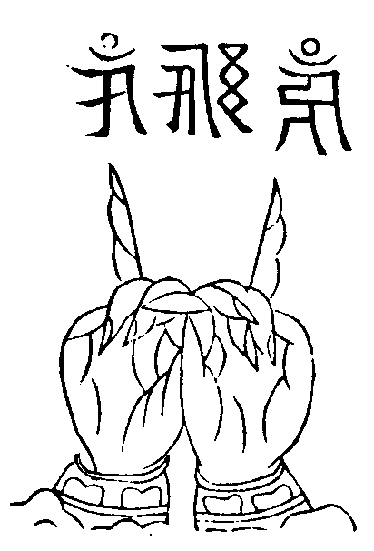
(以二手作金剛拳。手背相靠。二小指相鉤。二頭指直豎。結印當胸。想手印出火光。遣境界魔)。
唵。斡資囉(二合)。啞彌哩達。昆吒唎。曷納曷納。吽吽。癹吒
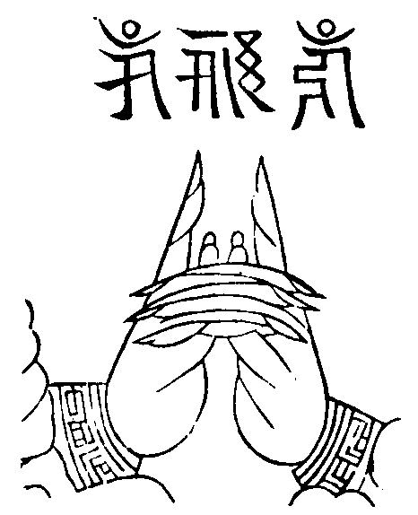
(以手外相义。二頭指直豎。結印當胸。手動似扇。印出火光。而遣諸魔)。
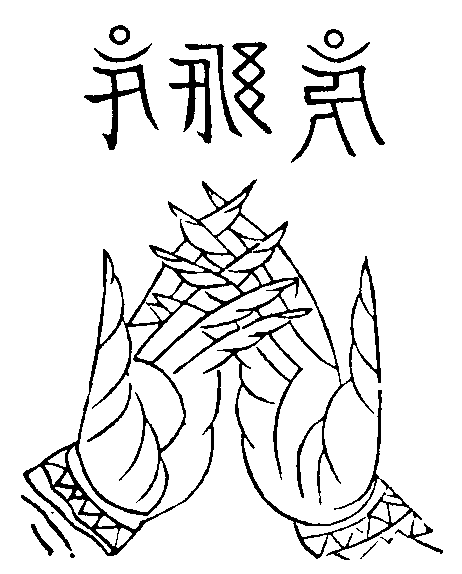
(以二手內相义。十指仰上。結印胸前。想印中放出金剛燄。令魔遠離)。
唵。斡資囉(二合)。佐辢啞捺辢。曷捺答曷。巴拶麼塔。班拶羅納。吽。癹吒
真空印呪
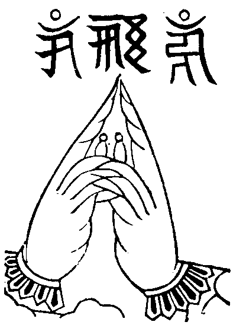
唵。莎[口*癹]斡。順牙(二合)。薩哩斡(二合)。答哩麻。(二合)莎[口*癹]斡。順牙(二合)達
於空性中。想bhrūṃ [口*普][口*(隆-一)](二合)[口*普][口*(隆-一)](二合)[口*普][口*(隆-一)](二合)啞啞啞吽吽吽而成十方世界。所有天妙曼怛。啞哩干。濯足花香燈塗良樂。清徹無礙。猶如普賢化現種種雲集供養。徧滿虗空。充塞法界。盡輪迴際。無有間斷。
唵。薩哩斡(二合)。答塔曷達薩叭哩咓囉(啞哩干巴丹)。巴囉(二合)諦拶耶莎訶
(運轉結蓮花手印。念五供養)。
唵薩哩斡(二合)答塔葛達薩叭哩咓囉
唵斡資囉不思必啞吽
唵斡資囉度必啞吽
唵斡資囉啞嚕吉啞吽
唵斡資囉干底啞吽
唵斡資囉你微的啞吽
音樂呪
唵。斡資囉(二合)。看支夷。囉納(二合)囉納(二合)。不囉(二合)囉納。不囉(二合)囉納。三不囉(二合)囉納。三不囉(二合)囉納。薩哩斡(二合)孛塔赤的囉(二合)。不囉拶哩答。麻曷不囉(二合)。尼牙(二合)巴囉。蔑答那達速巴微。薩哩斡(二合)。塔哩麻(二合)。紇哩(二合)達耶。傘多沙納。葛哩。吽吽。和和。啞龕莎訶
十二因緣呪
唵。耶答兒麻(二合)兮都。不囉(二合)巴斡兮。敦的山。答塔葛答歇斡怛的山。拶約尼嚕怛耶[口*邦]叭諦。麻曷釋囉(二合)麻納耶。莎訶
唵啞吽(念三徧。就撒花米畢。持鈴念)
曼拏囉偈
諦想清淨廣大曼答辢 四洲充滿無量珠珍寶
一一皆如妙高摩尼聚 奉獻上師三寶願安住
曼拏囉真言
唵。薩哩斡(二合)。答塔葛答囉的捺(二合)。麻曷曼答辢。布拶彌渴薩謨的囉(二合)。斯癹囉納。三麻耶啞吽
寶山寶海妙寶座 天衣瓔珞如意樹
寶池妙花香燈塗 週徧法界滿虗空
寶珠自性廣大海 七寶之中最殊勝
獻如雲聚妙寶供 我今虔誠而奉獻
中央八峯須彌盧 四大部洲諸形相
以日月等而圍遶 黃金白銀與寶玉
麻薩葛斡及瑠璃 赤珠乃至石心等
奉獻上師三寶前 唯願慈悲哀納受
唵。薩哩斡(二合)。答塔葛達囉的捺(二合)。麻曷曼答辢。布拶彌渴薩謨的囉(二合)。斯癹囉納。三麻耶啞吽
我今依教建立曼拏囉 量等虗空金剛為寶地
字字密言惟心之所成 須彌日月七寶四天下
衣服傘葢伎樂幢旛雲 寶座珍羞樓閣并宮殿
池沼園林名花普徧布 奉獻上師三寶護神等
惟願慈悲納受生歡悅 屏除魔礙集福施安寧
今宵施主所求皆如意 盡未來際吉祥無間斷
唵。薩哩斜(二合)。答塔葛達囉的捺(二合)。麻曷曼答辢。布拶彌渴薩謨的囉(二合)。斯癹囉納。三麻耶啞吽
(置鈴於案。以右手持花米。念云)。
惟願上師三寶中圍佛會。慈悲攝受。今辰施主。福慧莊嚴。世出世間。吉祥如意。普及法界一切有情。速成無上佛果菩提。
捺謨孤嚕(二合)毗牙(二合)
捺謨勃塔耶
捺謨達而麻耶
捺謨桑渴耶
唵啞吽(三徧畢。撒花米。撫尺一下。念云)
三歸依讚
將當闡揚施食之初。先須歸敬三寶。要祈法事周隆。庶使勝因成就。大眾慈悲。隨聲應和。
志心信禮佛陀耶。兩足尊。三覺圓。萬德具。天人調御師(唵啞吽)。凡聖大慈父。從真界。騰應質。悲化普。豎窮三際時。橫徧十方處。震法雷。鳴法鼓。廣演權實教(唵啞吽)。大開方便路。若歸依。能消滅地獄苦。
志心信禮達摩耶。離欲尊。寶藏收。玉函貯。結集於西域(唵啞吽)。翻譯傳東土。祖師弘。賢哲判。成章疏。三乘分頓漸。五教定宗趣。鬼神欽。龍天護。導迷標月指(唵啞吽)。除熱真甘露。若歸依。能消滅餓鬼苦。
志心信禮僧伽耶。眾中尊。五德師。六和侶。利生為事業(唵啞吽)。弘法是家務。避囂塵。常宴坐。寂靜處。遮身服毳衣。充腹採薪薇。鉢降龍。錫解虎。法燈常徧照(唵啞吽)。祖印相傳付。若歸依。能消滅。旁生苦。
(宣意畢舉云)。
香雲葢菩薩摩訶薩。
眾等發廣大心。
歸依金剛上師 歸依佛 歸依法 歸依僧
我今發心。不為自求人天福報。聲聞緣覺。乃至權乘諸位菩薩。唯依最上乘。發菩提心。願與法界眾生。一時同得阿耨多羅三藐三菩提。
先結大輪明王印 加持壇場悉清淨
我今依教誦密言 令我所作皆成就
默念大輪明王呪七徧。
(其印呪者。甘露軍茶利菩薩念誦儀云。二手內相义。直豎二頭指。並以二中指纏二頭指初節。前各頭相拄。二大指並伸直。結印當心。誦呪曰)。
捺麻斯得哩(三合)野。脫夷(二合)葛喃。薩哩斡(二合)。怛塔葛達喃。唵。微囉積。微囉積。麻曷拶葛囉(二合)。斡資哩(二合)。斡資哩(二合)。薩怛薩怛。薩囉諦。薩囉諦。得囉(二合)夷。得囉(二合)夷。微駄麻尼。三攀拶納禰。得囉(二合)麻禰的。席塔訖哩(二合)。得蘭(二合)顏席提。脫夷(二合)莎訶
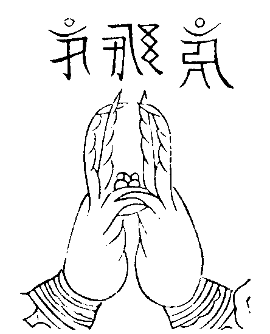
(師呪印可知。應想面前空處離身七肘。高八肘。現一金色bhrūṃ [口*普][口*(隆-一)]字。字種變成勝妙宮殿。以大千國土合為一國土。以此國土融成一宮殿。一一莊嚴。皆准華嚴經說勝妙樂事。問。此大千國土合而為一。云何合耶。答。一切國土體自空寂。誰立疆界若離眾生見。則國土自一。問。此土眾生。置於何處。答。是中眾生。即諸佛心中之眾生。同佛受用。復何用置。問。何全依心想便成宮殿。答。彼大千國土等。咸是妙明真心所現。若離真心。畢竟無有。今依幻化力故。復以大千國土而為宮殿。是為萬法由我者也)。
稽首十方調御師 演揚清淨微妙法
三乘四果解脫僧 願賜慈悲臨法會
奉請三寶
南無一心奉請。盡十方。徧法界。微塵剎土中。諸佛法僧。金剛密跡。衛法神王。天龍八部。婆羅門仙。一切聖眾。惟願不違本誓。憐愍有情。此夜今時。光臨法會(眾和香花請畢。首者白云)。
印現壇儀
(千手眼修行儀云。二手各作金剛拳。施進慧力相鉤。胸前微動。念真言曰)。
唵。斡資囉(二合)拶裓囉(二合)吽。拶。吽。[口*邦]。斛
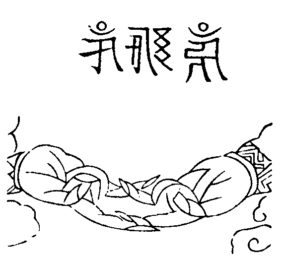
(師印呪可知。應想心間字種放光。至色究竟天上。召請智觀世音來入道場。此智觀世音即放無量光。召請一切三寶及顯密。護神來至道場。重重無盡。問。於此教門。但說果主因伴。今何得因為主果為伴耶。答。此有二義。一行者以觀音為所緣熟境。故先契此境。後契諸佛之境。然觀音放光召請諸佛。亦猶行者召請觀音者也。今藉觀音請佛。非為主也。二此菩薩即是過去威德自在光明王如來。退位度生。即果位也。若或為主。亦無過也)。
眾念三十五佛
大眾默念心經一徧
啟告十方一切諸佛。般若菩薩。金剛天等。及諸業道。無量聖賢。我今(某甲)以大慈悲。乘佛神力。召請十方盡虗空界。三途地獄。諸惡趣中。曠劫饑虗一切餓鬼閻羅諸司。天曹地府。業道冥官。婆羅門仙。久遠先亡。曠野冥靈。虗空諸天。及諸眷屬。異類鬼神。唯願諸佛。般若菩薩。金剛天等。無量聖賢。及諸業道。願賜威光。悲增護念。普願十方盡虗空界。天曹地府。業道冥官。無量餓鬼。多生父母。先亡久遠。婆羅門仙。一切冤結。負於財命。種種類族。異類鬼神。各及眷屬。乘如來力。於此時中。決定降臨。得受如來上妙法味清淨甘露。飲食充足。滋潤身田。福德智慧。發菩提心。永離邪行。歸敬三寶。行大慈心。利益有情。求無上道。不受輪迴諸惡苦果。常生善家。離諸怖畏。身常清淨。證無上道(三白)。
伸五供養
十方一切剎 諸佛菩薩眾 無量諸聖賢
及諸業道官 唯願大慈悲 降臨於法會
攝受花香燈塗果樂 微分少供養
吽字湧出(啞 花香燈 啞 塗果樂) 天母。一面四臂放光明(啞啞)。上二手印持妙(花香燈 啞 塗果樂 啞) 下二手印輪相交。吽。唵啞吽。唵啞吽。紇哩啞。妙(花香燈 塗果樂) 天母供養佛。願佛慈悲哀納受
因緣自性所出生 所有種種微妙(花香燈塗果樂)
奉獻上師三寶尊(啞啞) 惟願慈悲哀納受
戶唵薩哩縛怛他誐多(布思必 度 必 啞盧吉干 的 你尾的 沙布答)布佐銘遏三謨怛囉薩嚩蘭拏三麻曳吽
(師印呪可知。應想心間字種。出生六個hūṃ 吽字。各具一色。以六波羅密為體。化成六天母。窈窕美貌展左跪右而作舞勢。奉供諸佛。問。六色何色。答。花淡紅色。香黃色。燈紅赤色。塗白色。果紅黃色。樂青綠色。各相其色故。問曰。如何以六度為體。答。此有所表。花表布施。布施令人能生歡喜故。香表持戒。持戒則業行芬馥故。燈表忍辱。忍辱則轉瞋恚火為大光明故。塗表精進。精進則潤澤法身故。果表禪定。禪定則能成就佛果故。樂表智慧。智慧則能出生種種諸法故。問。果有此天母耶。謂只是依行想成。答。此六天母。乃喜金剛中圍內有之。皆佛母也。皆文殊普賢之儔也)。
我以普賢行願力 修設花香燈塗食
微塵剎土諸聖賢 一一徧禮皆供養
次結運心供養印
(誦七徧。其印以兩手外相义合掌。以右壓左置於頂上。凡作供養。應具此法。及奉瑜伽。皆依真言手印運心合掌置頂。方成圓滿供養)。
那麻薩哩斡(二合)。答塔葛的毗牙(二合)。月說穆契毗牙(二合)。唵(引)。薩哩斡(二合)哩塔。烏忒葛(二合)的。斯癹(二合)囉納兮慢。葛葛捺龕莎訶
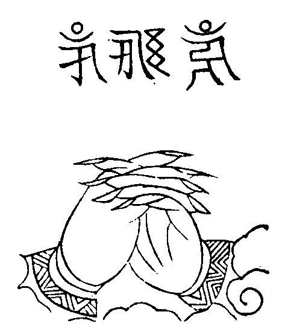
(師印呪可知。應想虗空法界。所有人天妙塗花香等燈明。幢幡傘葢。鼓樂歌舞。真珠羅網。懸諸寶鈴。花鬘白拂。微妙磬鐸。矜羯尼網。如意珠寶樹。衣服之雲。天諸厨食。上妙香美。種種樓閣。天諸嚴身。頭冠瓔珞。如是等雲。行者運心想滿虗空。以志誠心如是供養)。
次結遣魔印
(將奉三寶施食。先結三尖印。禪押施度頭。戒忍進疏伸。誦云)。
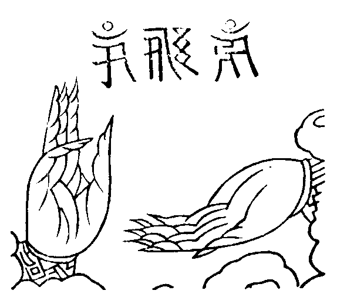
(師印呪可知。應想掌中有赤色吽字。字脚放光。從三尖出。作搖扇勢。遣食器上魔。問。食器上有何等魔。答。有尋香食施食等魔礙。故今遣之)。
次結變空印
(兩羽虛合掌。如蓮花狀。豎立胸前。而誦真言)。
唵。莎癹斡秫塔。薩哩斡(二合)塔哩麻(二合)。莎癹斡秫徒[元*欠]。唵(引)啞吽
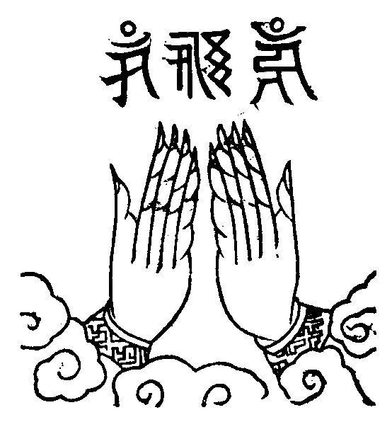
(師印呪可知。應想食器及食悉皆空寂。以分段食多染觸故。故今空之極令清淨。於其空處。應想三箇bhrūṃ [口*普][口*(隆-一)](二合)字字金色。變成食器。於食器中。想白色oṃ 唵字變成勝妙飲食。皆醍醐乳酪及麨蜜等味。點淨念唵啞吽二十一徧。極令廣大已。復念拶吽[口*邦]斛。而作手印。想令前來所觀三寶海會分明顯現。再伸五供養。施寶錯。念思麻囉等呪。想三寶攝受。初一分奉佛并法。次一分奉菩薩聖僧。後一分奉顯密護神。既奉獻已。然後作掬水勢。念云)。
次結奉食印
(兩羽相合。作掬水勢。念奉食呪三徧。各彈指一下)。
唵(引)。啞葛嚕穆看。薩哩斡(二合)。塔哩麻(二合)喃。啞牒耶(二合)(引)奴忒。班答奴忒。唵啞吽。癹吒莎曷
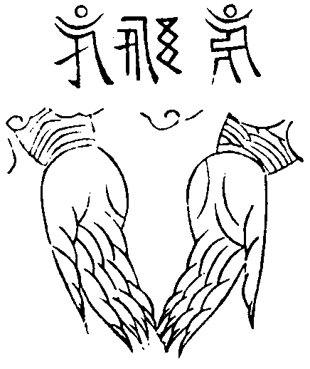
(想諸佛子等。徧奉三寶。生歡喜心。求索願事。必蒙允許。廣迎聖眾入壇。即以香花燈塗種種供養畢。默念奉食偈)。
振鈴念奉食偈
我今奉獻甘露食 量等須彌無過上
色香美味徧虗空 上師三寶哀納受
次供顯密護神等 後及法界諸有情
受用飽滿生歡悅 屏除魔礙施安寧
今辰施主眷屬等 消災集福壽延長
所求如意悉成就 一切時中願吉祥
三寶讚
世尊大慈妙莊嚴 明解圓滿一切智
能施福慧如大海 於諸如來我讚禮
自性本體離諸欲 能依此行脫惡趣
以為甚深微妙理 於諸妙法我讚禮
解脫道中勝解脫 持淨戒行堪恭敬
勝妙福田生聖處 於彼大眾我讚禮
普陀落伽常入定 隨緣赴感靡不周
尋聲救苦度羣迷 是故名為觀自在
次入觀音禪定
(以上供養三寶。是作福門。有福而無智。則落於人天因果。今若修習此觀音禪定。則有智。既具福智。即同諸佛。然後於法界眾生能作利益。侍者白云。次入觀音禪定。師作禪定。維那伸偈。其聲貴柔和清亮。不可雄厲。恐妨觀想。又不可太近世俗兒女之聲。當入定時。閉目澄心。觀想自身中圓滿潔白猶如淨月。於心淨月上。想hrīḥ [口*紇]哩字放大光明。其字變成八葉蓮花。上有觀自在菩薩。相好分明。左手持蓮花。右手作開敷勢。作是思惟。一切有情身中。有此覺悟之花。清淨法界。不染煩惱。蓮花八葉上。各有如來入定。跏趺而坐。面向觀自在。項佩圓光。身如金色。光明晃曜。想此八葉蓮花漸舒漸大。量等虗空。以此觀花照觸如來海會。願成廣大供養。以此覺花蒙照觸者。於諸苦惱悉得解脫。等同菩薩相好。即想蓮花漸收。量等己身。結印念呪。加持四處)。
南無無盡三寶尊
我今誓發菩提心
唯願菩薩來攝授
速證觀音微妙身
次入觀音三摩地
(躡前生後)。
澄心閉目觀心中
(澄心。則清淨之時也。內不放出。閉目。則觀想之時也。外緣不入。問曰。心無所住。安得有中。答。此明肉團心也。以靈知之心。棲止於肉團之心內故)。
圓滿皎潔淨月上
(圓滿皎潔者。心之體用也。圓而滿。則無德不備。體也。皎而潔。則無所不照。用也)。
字種放光成蓮花
(字種。[口*紇]哩字也。此字乃大悲菩薩取證之理。度生之妙門也。放光成蓮花者。乃所造之花也)。
花中有一觀自在
(即[口*紇]哩字。增長自身成觀自在菩篋。逆順無礙。故名自在。花乃指所坐之花也)。
相好具足無比對
(偈之略也。具說應云。一面二臂。其身金色。花冠瓔珞嚴身。頂戴阿彌陀佛。無比對。稱讚之詞也)。
左手執持妙蓮花
(理能成事。故云持也。花表因果同時也)。
右手於葉作開勢
(事能顯理。故作開勢也。已上並是自覺)。
(此二句方是覺他。行菩薩行也。偈意謂一切眾生與菩薩本自同體。皆有覺悟之蓮花。但由顛倒執著而不證也。故菩薩思惟而起哀救。行者於此處更不可將菩薩與自身作兩處想。前來既以字種增長作觀音。此處思惟即是指行人。若不能思惟。則向所作法徒勞心力)。
清淨法界無惑染
(當與前兩句作一片看。不可打成兩橛。清淨法界。一塵不立也)。
八葉各有一如來
(八葉。即指心間蓮花之八葉也。各有一如來者。即八識元是一心也。既是一心。還同正覺而為一體。故云各有。一如來者。即是觀音也。不言菩薩而言如來者。一超直詣也。此二句通自他說。約他。則言有情心本清淨無垢。覺悟蓮花中有八如來。約自。則言行人與八如來同時入定也)。
(問。定有多種。今如來入定。何等定耶。答。即行人所入之定也。此定名為剎那大悲禪定。又問。各各面向。前四面向可。後四豈不背耶。答。向背豈得名為如來。正所謂妙在轉處矣。若約事相而說。諸佛菩薩身。非同眾生分段之身。東向則背西。南向則背北。而菩薩有隨類意生身。應化無方。面向皆正。豈八如來。或千佛萬佛向無不正。學者當作是觀。更須向無向背處看)。
項佩圓光身金色
(彰殊勝身)。
光明朗照及晃曜
(彰殊勝境)。
(從前來十四句偈。皆顯理事二種法界。今此二句方入理事無礙法界。次想者令知時也。以事攬理成。故能漸舒大。以理隨事變。故能徧法界。則其大無外也。皆是唯心境界。不是分外)。
(此二句正明事事無礙也。覺花。事也。海會。亦事也。以覺花稱周時。與如來海會同時廣大而無礙。譬如一室千燈。光光無雜。法界者十法界也。四聖六凡之謂也。意謂此花舒大時。能照此十法界。同於一真。更無殊別也)。
(上句自覺。下句覺他。上來思惟有情。方是起行。至此憐愍一切。方是行行。謂證此無礙廣大境界。方能行行度生也)。
覺花蒙照脫苦惱
(利生之効也)。
便同菩薩觀自在
(所獲之果也。初發心時即得阿耨多羅三藐三菩提之謂也)。
蓮花漸收同己量
(前八句皆舒。此一句唯卷。約密說。即是增長究竟。准魯餘巴現前解云。從正位而起名增長。復皈正位是究竟。亦是始本不二也。上師云。有放不收同凡夫。有收不放名聲聞。有收有放名為祕密境界。收放總不用名為無戲論。此乃最極本續也。收之一字。不覺如此輕易流布。學者亦不可作等閒見聞也)。
(此二句皆約行者請求智佛冥加之力也。所以密言者。皆指後面手印之密言也)。
自身亦等觀自在
(前來既觀觀音。今恐迷己逐物。復回觀自身。故云亦等。最初既以字種增長令成觀音。何又云亦等。答云。初來增長由未離覺。今是親證親入也。如善財始見文殊等也。又前所想觀音。望因則名因中果也。加持密言之後。則當體即果中因也)。
(謂初入壇場。即頓起觀音慢。今復何故又入此定。豈不濫耶。不也。前是根本定。亦名正位。亦名正體。如在家為人也。此後所入定。即是所作定。如在邦為臣也。其實一體而約處殊也。又如人在朝則朝衣。在戎則戎服。故根本定白色。所作定金色。向下隨一一作法。多有更易身色。當以此理鑑之)。
以此禪定勝功德
回向法界諸眾生
同見西方無量光
成就普賢廣大願
(結自在觀音印。以二手外相义。二指頭相拄。如蓮花葉。二大指並豎。即誦真言時。加持四處。頂喉心臍是也)。
唵(引)。斡資囉(二合)。塔囉麻(二合)[口*紇]哩
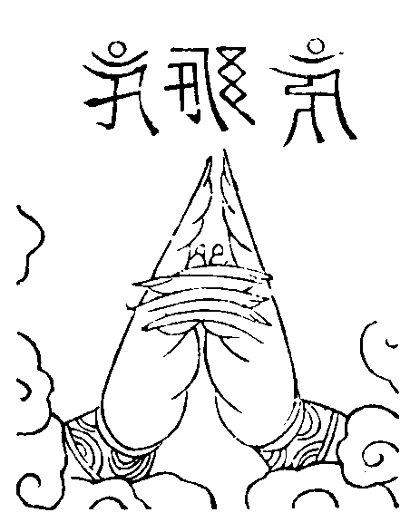
(師印呪可知。每處以手印按之。誦真言一次。復以oṃ 唵字加持。即當以印按口上。次以hūṃ 吽字加頂trāṃ 得[嚂-皿+見](二合)字加臍。hrīḥ [口*紇]哩字加心。āḥ 阿字加喉。以此加持令身堅固也。所以一切魔礙皆不能害也。加持四處有二說。只用前說)。
次結破地獄印
(兩羽金剛拳。施慧兩相鉤。進力伸相拄。念想開地獄。三誦三掣開真言曰)。
那麻阿瑟吒(二合)。瑟吒(二合)攝諦喃。三藐三勃塔。俱胝喃。唵(引)。撮(引)辣(引)納。嚩婆細。提哩提哩吽
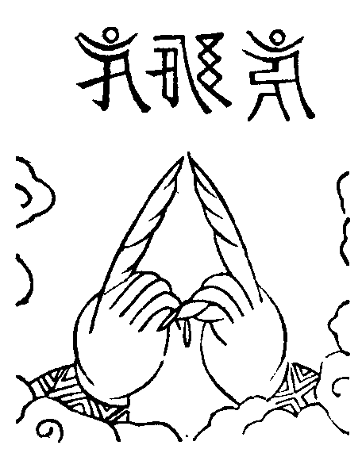
(師印呪可知。應想自身增長紅色觀音。一面二臂。舌上心間印上三處。皆有紅色hrīḥ [口*紇]哩(二合)字放光。如日初出之光。照觸地獄悉皆破壞。問云。一處放光足以破之。何用三乎。答。為彼地獄是眾生三業妄造故。故今亦用三業放光以破之也。又問。地獄是眾生別業而成。云何能破。答。雖云別業。同是一心。以智照之。眾生亦無。豈有地獄。由迷一心。故妄造。眾惡。惡業成熟。妄成地獄。既墮地獄。妄見受苦。譬如夢中。為虎狼師子所噬。或為賊所縛。或遭王難。受種種苦。及至夢醒。了無所得。今觀地獄及苦亦復如是。假以照力。無不破也。問。地獄既然本空。何須破而救之。答。我雖以智照知其本空。彼無智照焉得不苦。故圓覺經云。夢時非無。及至於醒了無所得。今正欲破此地獄及苦空也。若推原之。彼以惡業因緣而成地獄。則知非有矣。我今以智照因緣而為之破。一禪定。二手印。三真言。四作觀。五智照。有此五種因緣。何事不辦。豈唯破地獄乎。今世學者。濫稱闍黎。惟是音聲振鈴擊節。慮恐負於請主之意者多矣)。
奉請地藏王菩薩
(表白舉香花請。眾和畢。首者執爐請云)。
南無一心奉請。眾生度盡。方證菩提。地獄未空。誓不成佛。大聖地藏王菩薩摩訶薩。惟願不違本誓。憐愍有情。此夜今時。光臨法會。
(眾和香花請。師置爐。伸四轉輪印。念拶吽[口*邦]斛。結印默念。伸五供養 宣祖宗亡靈附薦等疏)。
一心召請。累朝帝主。歷代侯王。九重殿闕高居。萬里山河獨據。(白)西來戰艦。千年王氣俄收。北去鑾輿。五國冤聲未斷。(嗚呼)杜鵑叫落桃花月。血染枝頭恨正長。如是前王後伯之流。一類孤魂等眾。惟願承三寶力。仗祕密言。此夜今時。來臨法會。
(眾和受此無遮甘露法食)。
一心召請。築壇拜將。建節封侯。力移金鼎千鈞。身作長城萬里。(白)霞寒豹帳。徒勤汗馬之勞。風息狼煙。空負攀龍之望。(嗚呼)將軍戰馬今何在。野草閒花滿地愁。如是英雄將帥之流。一類孤魂等眾(云云)。
一心召請。五陵才俊。百郡賢良。三年清節為官。一片丹心報主。(白)南州北縣。久離桑梓之鄉。海角天涯。遠喪蓬萊之島。(嗚呼)官況蕭蕭隨逝水。離魂杳杳隔陽關。如是文臣宰輔之流。一類孤魂等眾(云云)。
一心召請。黌門才子。白屋書生。探花足步文林。射策身遊棘院。(白)螢燈飛散。三年徒用工夫。鐵硯磨穿。十載慢施辛苦。(嗚呼)七尺紅羅書姓字。一坏黃土葢文章。如是文人舉子之流。一類孤魂等眾(云云)。
一心召請。出塵上士。飛錫高僧。精修五戒淨人。梵行比丘尼眾。(白)黃花翠竹。空談祕密真詮。白牯黧奴。徒演苦空妙偈。(嗚呼)經窗冷浸三更月。禪室虗明半夜燈。如是緇衣釋子之流。一類覺靈等眾(云云)。
一心召請。黃冠野客。羽服仙流。桃源洞裏修真。閬苑洲前養性。(白)三花九煉。天曹未許標名。四大無常。地府難容轉限。(嗚呼)琳觀霜寒丹竈冷。醮壇風慘杏花稀。如是玄門道士之流。一類遐靈等眾(云云)。
一心召請。江湖羈旅。南北經商。圖財萬里遊行。積貨千金貿易。(白)風霜不測。身膏魚腹之中。途路難防。命喪羊腸之險。(嗚呼)滯魄北隨雲黯黯。客魂東逐水悠悠。如是他鄉客旅之流。一類孤魂等眾(云云)。
一心召請。戎衣戰士。臨陣健兒。紅旗影裏爭雄。白刃叢中敵命。(白)鼓金初振。霎時腹破腸穿。勝敗纔分。徧地肢傷首碎。(嗚呼)漠漠黃沙聞鬼哭。茫茫白骨少人收。如是陣亡兵卒之流。一類孤魂等眾(云云)。
一心召請。懷耽十月。坐草三朝。初欣鸞鳳和鳴。次望熊羆叶夢。(白)奉恭欲唱。吉凶只在片時。璋瓦未分。母子皆歸長夜。(嗚呼)花正開時遭急雨。月當明處覆烏雲。如是血湖產難之流。一類孤魂等眾(云云)。
一心召請。戎夷蠻狄。喑啞盲聾。勤勞失命傭奴。妒忌傷身婢妾。(白)輕欺三寶。罪愆積若河沙。忤逆雙親。兇惡浮於宇宙。(嗚呼)長夜漫漫何日曉。幽關隱隱不知春。如是冥頑悖逆之流。一類孤魂等眾(云云)。
一心召請。宮幃美女。閨閣佳人。臙脂畫面爭妍。龍麝薰衣競俏。(白)雲收雨歇。魂消金谷之園。月缺花殘。腸斷馬嵬之驛。(嗚呼)昔日風流都不見。綠楊芳草髑髏寒。如是裙釵婦女之流。一類孤魂等眾(云云)。
一心召請。饑寒丐者。刑戮囚人。遇水火以傷身。逢虎狼而失命。(白)懸梁服毒。千年怨氣沈沈。雷擊崖崩。一點驚魂漾漾。(嗚呼)暮雨青煙寒鵲噪。秋風黃葉亂鴉飛。如是傷亡橫死之流。一類孤魂等眾(云云)。
一心召請。法界六道。十類孤魂。面燃所統。薜茘多眾。塵沙種類。依草附木。魑魅魍魎。滯魄孤魂。自他先亡。家親眷屬。等眾(云云)。
(化孤魂紙)。
上來召請。悉已來臨。大眾慈悲。齊聲歎悼。
近代先朝。帝主尊榮位。勳戚侯王。玉葉金枝貴。宰執中宮。婇女嬪妃類。夢斷華胥。來受甘露味。
國士朝臣。經緯匡時世。牧化黎民。未遂忠良志。失寵懷憂。謫降邊邦地。戀國遊魂。來受甘露味。
武將戎臣。統領三軍隊。結陣交鋒。鑼鼓喧天地。北戰南征。失陷沙場內。為國亡軀。來受甘露味。
學古窮經。錦繡文章士。映雪偷光。苦志寒窗內。命運蹉跎。金榜無名字。鬱鬱幽魂。來受甘露味。
割愛辭親。早入空門內。訪道尋師。只為超生死。暑往寒來。不覺無常至。返照回光。來受甘露味。
羽服黃冠。早發修真志。煉藥燒丹。養性還元氣。苦行勞神。指望登仙位。莫戀遺形。來受甘露味。
孝子賢孫。義勇忠良士。烈女貞妻。視死如歸去。仗節忘軀。千古留英氣。耿耿靈魂。來受甘露味。
女道尼流。身住黃金地。鸞鳳緣空。不染人間事。未了無為。流浪虗生死。清淨幽魂。來受甘露味。
地理天文。醫藥陰陽類。卜卦占龜。風鑑并星士。報吉談凶。難免無常對。捨偽歸真。來受甘露味。
坐賈行商。種種經營輩。藝術多能。貿易求財利。背井離鄉。死在他方地。旅夢悠悠。來受甘露味。
犯法遭刑。牢獄長幽繫。負命謀財。債主冤家類。惡疾天災。凍死饑亡輩。速離黃泉。來受甘露味。
馬踏車傷。牆壓身形碎。鬼擊雷轟。自刎懸梁縊。水火焚漂。虎咬蛇傷類。九橫孤魂。來受甘露味。
飲血茄毛。生長蠻夷地。負債償勞。婢妾并奴隸。喑啞盲聾。殘疾無依恃。受苦冤魂。來受甘露味。
忤逆爺娘。怨黷天和地。謗佛欺僧。毀像焚經偈。邪見深沈。苦報無邊際。十惡狂魂。來受甘露味。
大施門開。薦拔孤魂輩。祖禰先亡。五姓冤家類。八難三途。平等俱超濟。仗佛光明。來受甘露味。
阿彌陀佛。宿有無邊誓。觀見迷途。苦海常漂溺。垂手殷勤。特駕慈航濟。普載眾生。同赴蓮池會。
南無蓮池海會佛菩薩(三稱)。
我以大悲佛神力 召請冥陽諸有情
曠劫饑虗餓鬼等 不違佛勅來降臨
次結召請餓鬼印
唵。即納即葛。移希曳(二合)歇莎訶
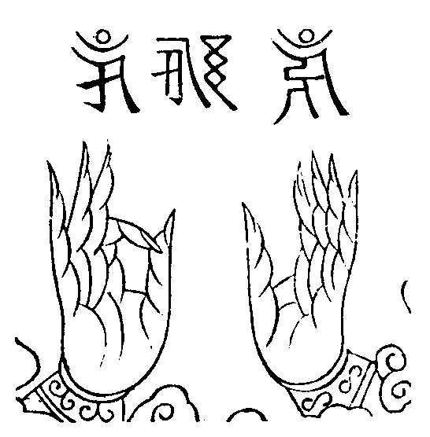
(師印呪可知。應想左手印上白色hrīḥ [口*紇]哩(二合)字放光。勾彼鬼眾至於道場。繞佛三帀。禮佛而出。至壇外。壇外分為四門。東門至南門地獄眾。南門至西南隅餓鬼眾。自西南隅至西門畜生眾。自西門至西北隅人眾。自西北隅至北門脩羅眾。自北門至東門天眾。應當如是而安住之。侍者白云安慰)。
既召請已。普皆雲集。以愍念心。讚歎慰喻。令歡喜已。渴仰於法(首者白云)。
善來諸佛子。曾結勝緣故。今遇此嘉會。勿得生憂怖。一心渴仰法。不出於此時。戒品而霑身。速令離苦趣。
次結召罪印
唵。薩哩斡(二合)巴鉢。羯哩(二合)沙拏(二合)。月戌駄納。斡資囉(二合)薩埵。薩麻耶。吽。拶
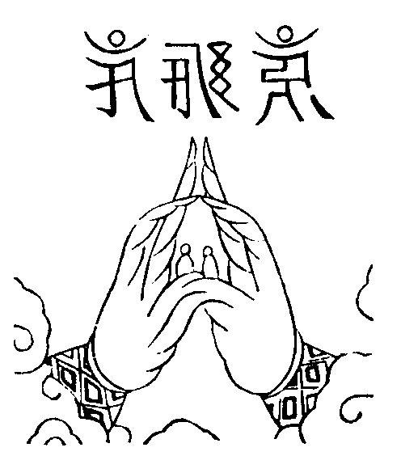
(師印呪可知。應想於二中指尖上。想白色[口*紇]哩（二合）字出光。入彼身中出其罪。猶如煙霧而合。問云。罪無實體。云何今說如彼煙霧出有實體者耶。答。雖無實體。能充塞天地。障蔽心目。不能得見諸佛清淨境界。今借諸霧為所緣相。以召其罪。實有益於事也)。
次結摧罪印
唵。斡資囉(二合)巴尼月斯普(二合)吒耶。薩哩斡(二合)阿巴耶。班塔拏尼。不囉(二合)穆恰耶。薩哩斡(二合)阿巴耶。葛諦毗藥(二合)。薩哩斡(二合)。薩埵喃。薩哩斡(二合)答塔葛達。斡資囉(二合)。三麻耶。吽。怛囉吒
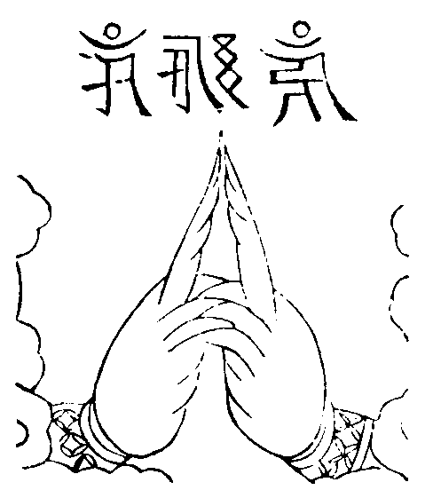
(師印呪可知。於二中指尖上。左想trā 怛囉(二合)字。右想ṭa 吒字。並金色。應當行人身自增長。作青色綠色觀音菩薩之身。每念呪一徧。二中指摩搖。至後一徧义過。拍手作聲。想彼罪山猶如瓦。塌而倒。前來所召之罪如煙霧者應念而散。問。罪無體相。云何摧耶。答。正謂之無故摧也。若決定有。豈能摧耶。侍者白云)。
次結破定業印
(二羽金剛掌。進力屈二節。禪智押二度。淨業真言曰)。
唵。斡資囉(二合)葛哩麻(二合)。月束塔耶。薩哩斡(二合)。阿咓囉拏你。菩塔薩底曳(二合)納。三麻耶吽
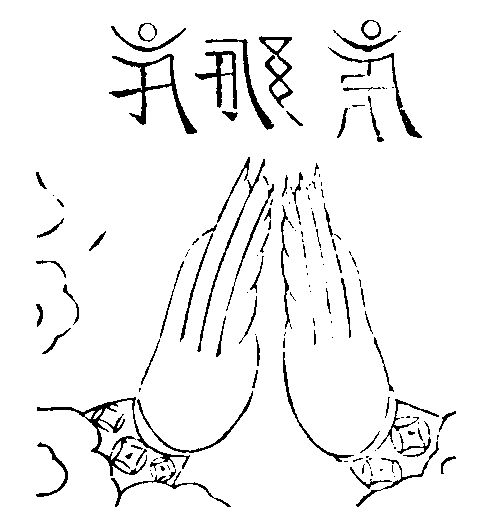
(師印呪可知。心月輪上。想一青色hrīḥ [口*紇]哩(二合)字出光。照前諸鬼眾所有諸佛出世不通懺悔之業。應想自性清淨本無作想。觀彼鬼眾及佛與心三無差別。是名破決定業也。此一法。正是斷所知障。學者知之。侍者白云)。
罪性本空由心造 心若滅時罪亦亡
罪亡心滅兩俱空 是則名為真懺悔
次結懺悔滅罪印
唵。薩哩斡(二合)巴鉢。月斯普(二合)吒。怛賀納。斡資囉(二合)。耶。莎訶
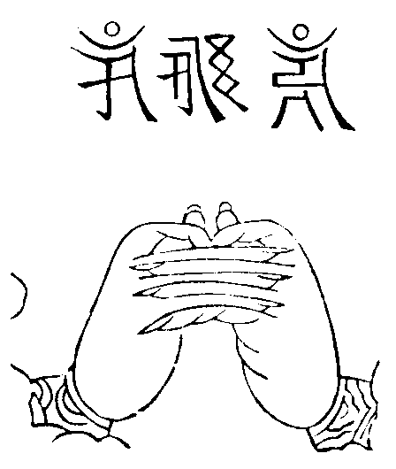
(師印呪可知。應想二屈指上。有白色[口*紇]哩（二合）字。放光入彼鬼身。如日爍露之狀。罪垢銷鎔。猶如墨汁。從足流下。滲入地中。至金剛際。問云。前來既召既摧既破。今復為懺悔何耶。答云。前來並是理懺悔。今者方是事懺悔。理事無礙。故不濫耶。又問云。何罪如墨汁。答。罪者黑業也。故以墨表。汁有流注之義。故云墨如汁也)。
諸佛子等。既懺悔已。百劫積集罪。一念頓消除。如火焚枯草。滅盡無有餘。
次結妙色身如來施甘露印
那謨蘇嚕癹耶。答塔葛達耶。怛牒塔。唵。酥嚕酥嚕。鉢囉(二合)酥嚕。鉢囉(二合)酥嚕。莎訶
(師印呪可知。結印誦呪。想左手願上白色vaṃ 錽字。流出甘露。如水銀色。是真智所成。右手點取。彈灑虛空。想諸天及人鬼等類。觸此甘露。悉具色相。猛火悉滅。普得清凉。離饑渴想。滅心執障)。
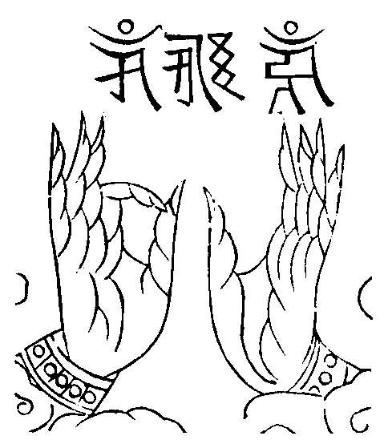
次結開咽喉印
唵。那謨癹葛咓諦。月補辣葛得囉(二合)耶。答塔葛達耶
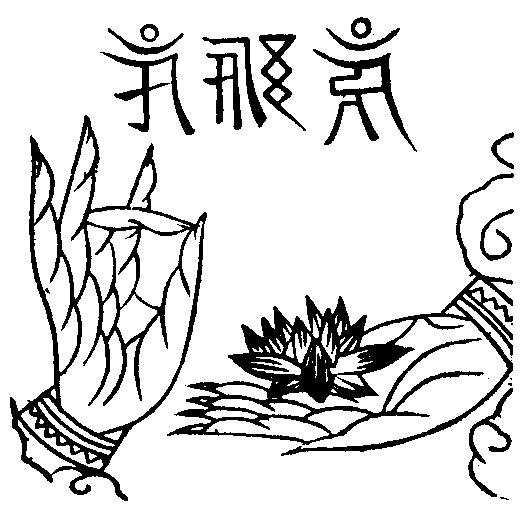
(師印呪可知。結印誦呪。左手掌中想一青色蓮花。蓮花上想一白色āḥ 阿字。流出性水。極甚清冷。右手點取彈灑虗空。想諸鬼眾。得觸此水咽。喉廣大。清凉潤澤。無所障礙。問云。何前來多用[口*紇]哩（二合）字。此獨用阿字。何也。答云。阿字是語種。故依三本續用之也)。
語諸佛子。今為汝等作印呪已。咽喉自開。通達無礙離諸障難。諸佛子等。我今為汝稱讚如來吉祥名號。能令汝等。永離三途八難之苦。常為如來真淨佛子。
南無寶勝如來
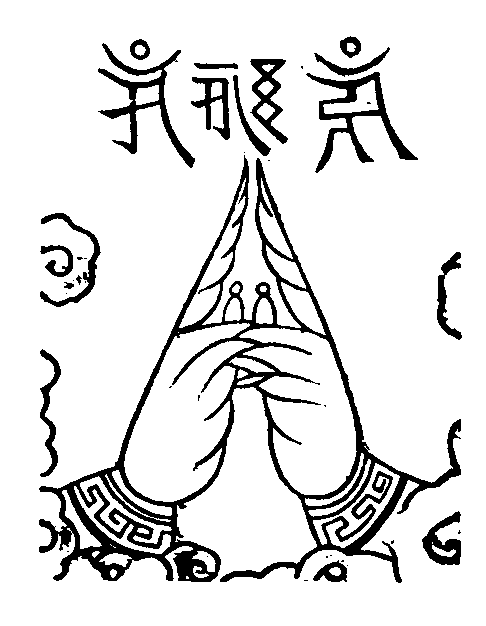
(二羽金剛掌。六度內相义。進力頭相拄。禪智側豎立。一切有情同稱聖號)。
那謨囉怛納(二合)怛囉耶。答塔葛達耶
(誦彼如來。結彼手印。應不離自身觀音也)。
南無離怖畏如來
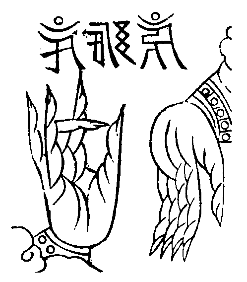
諸佛子等。若聞離怖畏如來名號。能令汝等。常得安樂。永離驚怖。清淨快樂。
南無廣博身如來
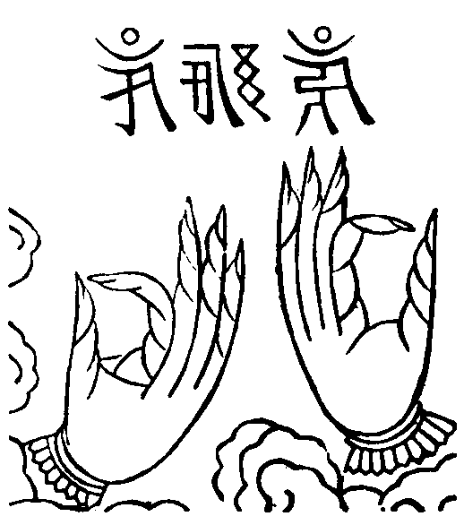
諸佛子等。若聞廣博身如來名號。能令汝等。餓鬼針咽。業火停燒。清涼通達。所受飲食。得甘露味。
南無妙色身如來
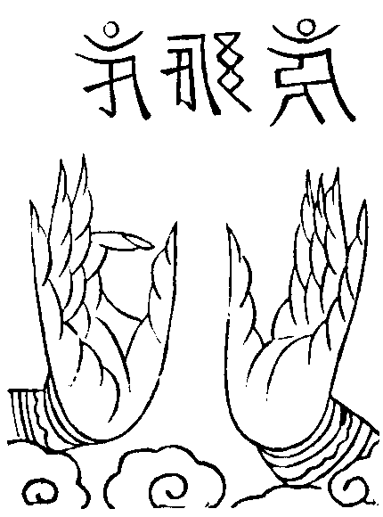
諸佛子等。若聞妙色身如來名號。能令汝等。不受醜陋。諸根具足。相好圓滿。殊勝端嚴。天上人間最為第一。
南無多寶如來
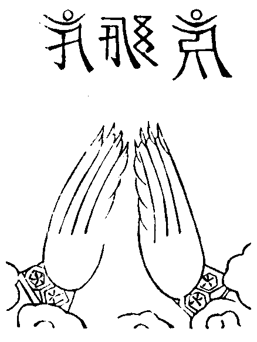
諸佛子等。若聞多寶如來名號。能令汝等。具足財寶。稱意所須。受用無盡。
南無阿彌陀如來
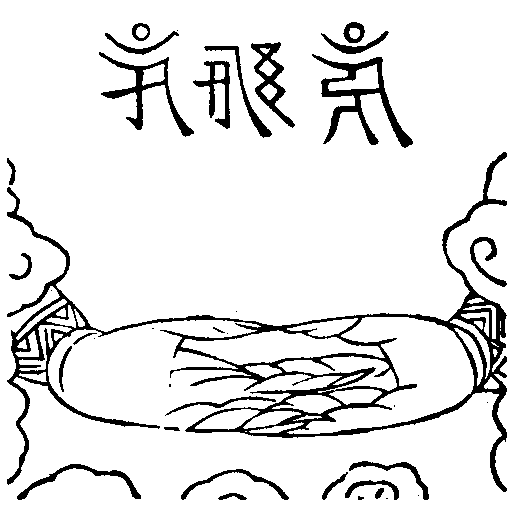
諸佛子等。若聞阿彌陀如來名號。能令汝等。往生西方極樂淨土。蓮花化生。入不退地。
南無世間廣大威德自在光明如來
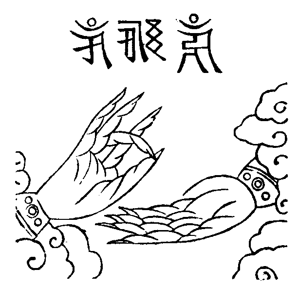
那謨盧迦委斯諦。(二合)呤捺(二合)弟唧說囉。不囉(二合)癹耶。答塔葛達耶
諸佛子等。若聞世間廣大威德自在光明如來名號。能令汝等。獲得五種功德。一者於諸世間。最為第一。二者得菩薩身。端嚴殊勝。三者威德廣大。超過一切外道天魔。如日照世。顯於大海。功德巍巍。四者得大自在。所向如意。似鳥飛空。而無阻礙。五者得大堅固智慧光明。身心明徹。如瑠璃珠。
諸佛子等。此七如來。以誓願力。拔濟眾生。永離煩惱。脫三途苦。安隱常樂。一稱其名。千生離苦。證無上道(如是三白)。
次與汝等皈依三寶
皈依佛兩足尊 皈依法離欲尊 皈依僧眾中尊 皈依佛不墮地獄 皈依法不墮餓鬼 皈依僧不墮旁生。
汝等佛子 皈依佛竟 皈依法竟 皈依僧竟 皈依三寶故 如法堅護持 自離邪見道 是故至心禮。
次結三寶印
(左羽作拳相。豎進度當胸。右手屈力度。心想誦真言)。
唵婆(重呼)龕
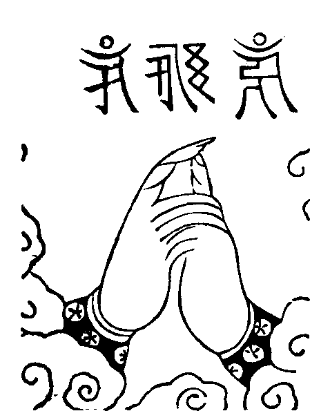
南無佛。南無法。南無僧。我今發心。不為自求人天福報。聲聞緣覺。乃至權乘諸位菩薩。唯依最上乘發菩提心。願與法界眾生一時同得阿耨多羅三藐三菩提。
今所發覺心 遠離諸性相 蘊處及界等
能取所取執 諸法悉無我 平等如虗空
自心本不生 空性圓寂故 如諸佛菩薩
發大菩提心 我亦如是發 是故至心禮
次與汝等。發菩提心。汝等諦聽
次結發菩提心印
(兩羽虗合掌。猶如蓮花狀。以印心上)。
唵補提即答沒怛巴達野彌
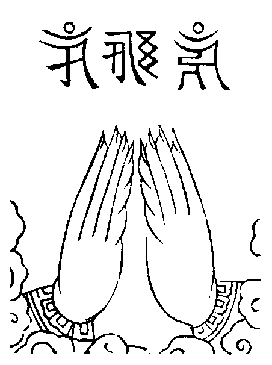
(師印呪可知。應想心佛眾生三無差別。於一念間融成一廣大月輪。如八月十五日夜中宵無雲之時。極甚清涼皎潔。與虗空齊等。於月輪中想一金色āḥ 阿字。如秋毫之末。非有非無故。當爾之時。不得加於了知。上無佛可成。下無生可度。中無行可修。煩惱菩提生死涅槃淨盡。此為大要。宜善用心焉。不惟為鬼神。作利。行人不久亦就此中了解者矣。師誦呪。眾和三聲。次白云)。
今為汝等。發菩提心竟。諸佛子等。當知菩提心者。從大悲起。成佛正因。智慧根本。能破無明。煩惱惡業。不被染壞 次與汝等受三昧耶戒。
次結三昧耶印
唵(引)。三摩耶。薩埵錽
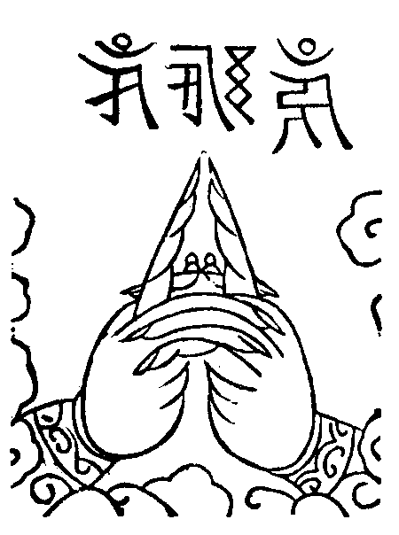
(師印呪可知。應想印中有白色vaṃ 錽字。放大光明。普照所請一切有情。彼諸有情蒙光照及。三世諸佛戒波羅蜜一時圓滿。法界善法。想為光明。流光灌頂。貯彼身中。身同普賢。坐大月輪。紹諸佛職。為佛嫡子)。
今為汝等。受三昧耶戒竟。從今已去。能令汝等入如來位。是真佛子。從法化生。得佛法分。
汝等冥陽諸有情 吾今施汝甘露食
法力加持徧十方 令汝一一皆飽滿
次結無量威德自在光明如來印
唵。薩哩斡(二合)。答塔葛達。阿咓盧揭諦錽。婆囉婆囉。三婆囉。三婆囉。吽
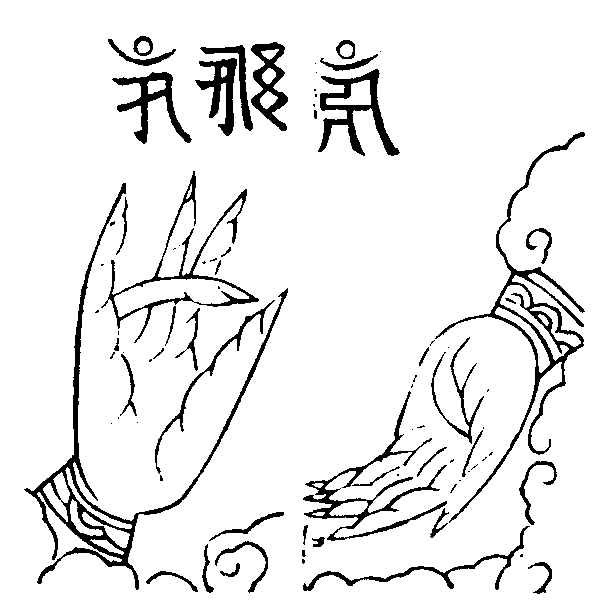
(師印呪可知。侍者取水點盌中及桶中。退坐本位師應以右手怖畏。彈指。遣左手魔礙。念云吽吽癹怛。念三徧。問。手有何魔耶。答。為手中有諸戶蟲。次變空。念云唵[亢*欠]或三徧。問。變空此手。其意如何。答。以此手是赤白二種不淨所成。故空之。令成勝妙功德。莊嚴手也。問。前來入禪定。則自己是菩薩。今復何故又遣魔變空。答。法華經云。世尊說無量義已。又入三昧放光。至開寶塔。又入定放光。豈不濫耶。蓋因一事而彰一法。譬乎世禮。祀宗廟之人。非不齋戒沐浴。及至登殿之時。却又盥手何也。為表敬也。今再遣魔變空。表慈之深悲之極用心之切也。次於一念間頓成勝妙之手。於手掌中出一紅色paṃ [口*邦]字。變成紅色蓮花。上想一白色vaṃ 錽字。明點中流出無盡飲食。想面前水器盡成摩竭陀國之斛。七寶嚴飾。滿盛勝妙飲食等。然後想此字種。流出無盡飲食。變滿法界。念唵阿[口*紇]哩（二合）吽呪一百八徧。或四十九徧。當自知時。次念變食呪。每一念於明點中取飲食彈灑虗空。侍者白云)。
語諸佛子。今為汝等。作印呪已。變此一食為無量食。大如須彌。量同法界。終無能盡。
復結前印誦乳海真言
那麻三鬘哆。勃塔喃。錽
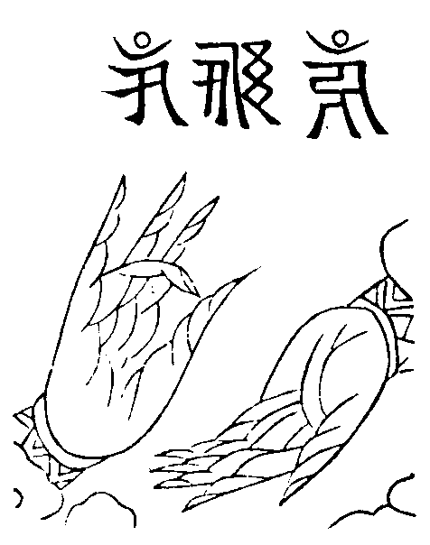
(師印呪可知。應想錽字明點中流出甘露。以右手點取彈灑虗空。如雨注下。凡所至處。即成長河酥酪也。問。云何以少小器水等。徧滿法界。答。心力難思故也。況又藉神呪及字種觀想等力。乃至諸佛冥加禪定之力。豈不能變小成大化少為多也。且如欒巴一危之酒。以術力尚能化為霖雨。何況神呪難思之力者乎。行者亦不可不專注用心也。又問。何故不以飲食施之。卻用水也。答。彼鬼趣多為業火所燒。故今以水施之。沃滅其業火。佛云。彼鬼等百千萬劫不聞漿水之名。何況得飲。又云。彼鬼在恒河邊而不見水。設使得見。變成膿血。況飲之時。入腹化為猛燄。熱燒心腹。難堪痛苦。悲哉悲哉。故今以水施之。體此意也。又番本云蘇嚕巴。此云水施食。則知本乎施水矣。今世俗人不知。多用施食。水亦失也。況今施食。亦不專用水。彼器中皆投飯。七粒徧十方是也。故勿疑諸。侍者。白云)。
語諸佛子。今為汝等作印呪已。由此印呪加持威力想於印中流出甘露。成於乳海。流注法界。普濟汝等一切有情。充足飽滿。
次誦障施鬼真言
唵啞吽。拶辢彌擔。薩哩斡(二合)不哩(二合)的毗牙(二合)莎訶
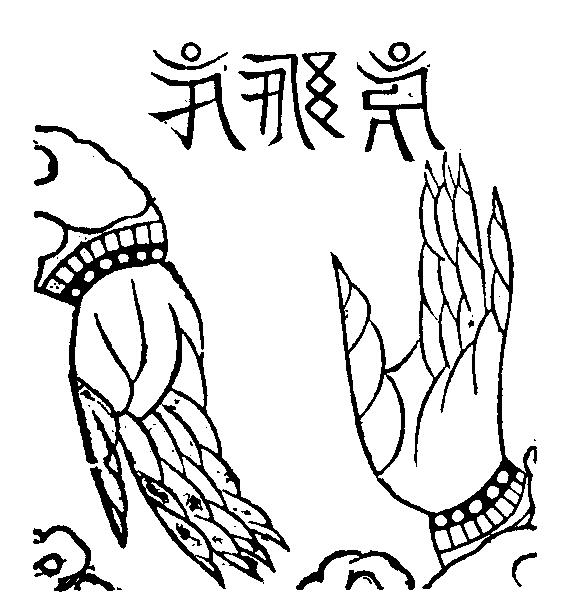
(師印呪可知。應展垂右手想。錽字明點內。流出甘露。從左掌而下。念唵啞[口*紇]哩（二合）吽一百八徧。或七七徧。三七徧。皆可。侍者至師前作禮。取淨水瓶出壇外。唱云淨水。徐徐注下。師至唱時。想彼障施鬼悉皆胡跪。師即想自身觀音。徧至其前而施甘露。從頂上入。滅其業火。施彼清涼。後念障施鬼真言三徧。各彈指一聲)。
諸佛子等。雖復方以類聚。物以羣分。然我所施。一切無礙。無高無下。平等普徧。不擇冤親。今日勿得以貴輕賤。以強淩弱。擁遏孤幼。令不得食。使不均平。越佛慈濟。必須互相愛念。猶如父母憶子之想。語諸佛子。汝等各有父母。兄弟姊妹。妻子眷屬。善友親戚。或有事緣來不得者。汝等佛子。慈悲愛念。各各齎持飲食錢財物等。遞相布施。充足飽滿。無有乏少。令發道意。永離三途。長越四流。當捨此身。速超道果。又為汝等。將此淨食分為三分。一施水族。令獲人空。二施毛羣。令獲法寂。三施他方。稟識陶形。悉令充足。獲無生忍。
神呪加持淨法食 普施河沙眾鬼神
願皆飽滿捨慳貪 速脫幽冥生淨土
次結普供養印
(二羽直合掌。忍願屈二節。誦真言)。
唵。葛葛納。三婆斡。斡資囉(二合)。斛
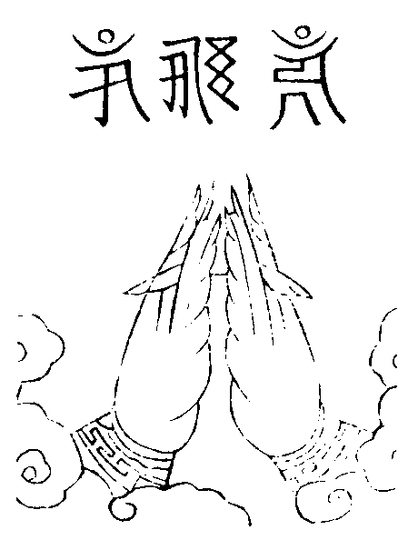
(師印呪可知。應想屈中指處有白色唵oṃ 字。明點中流出無盡供養。具足莊嚴。平等供養。同聲念普供養真言。或五徧七徧。問。最初既奉獻三寶。施食已竟。今復何故作此供養。答。前來所作。猶揀聖凡。故奉獻三寶。後施鬼眾。今融以平等。故聖凡交徹。所以普供養也。維那白從來所受飲食文畢。師應作五供養施寶錯。念斯麻囉等呪畢。侍者白。次為汝等稱誦法樂。大眾同音諷誦)。
諸佛子等。從來所受飲食。皆是人間販鬻生命。酒脯錢財。血肉腥羶。暈辛臭穢。雖復受得如是飲食。譬如毒藥。損壞於身。但增苦本。沈淪苦海。無解脫時。我今依如來教。精誠罄捨。設此無遮廣大法會。汝等今日遇茲勝事。戒品霑身。於過去世。廣事諸佛。親近善友。供養三寶。由此因緣。值善知識。發菩提心誓願成佛。不求餘果。先得道者。遞相度脫。又願汝等。晝夜恒常。擁護於我。滿我所願。以此施食所生功德。普將回施法界有情。共諸有情。同將此福。盡皆回施無上菩提一切智智。勿招餘果。願速成佛。
大眾同念尊勝呪
(尊勝經有五譯。況亦大同小異。此其一也。世名此為尊勝真言。唱詠之。而呪則專持下唵[口*普][口*(隆-一)]云云。護真法師常舉問大師。大師云當以藏本為正。今增入)。
南無薄伽伐帝。咥哩盧枳也。鉢喇底毗失瑟吒(引)也。勃陀(引)也。薄伽伐帝。怛姪他。唵。毗輸駄(唐左反)也。颯麼三曼多。阿婆婆(引)娑。颯癹囉拏揭底[口*((尸-口+(占-口+田))@巳)]喝娜。瑣婆(引)婆毗戌(商聿反下同)睇。阿毗詵者覩漫(引)。蘇揭多跋囉跋者那。阿蜜栗多鞞師計。痾(引)(下同)喝囉。痾喝囉。痾愈珊陀(引)喇你。輸駄也輸駄也。伽伽那毗戌睇。烏瑟膩沙。毗逝也戌睇(引)。索訶薩囉曷[口*賴]溼弭珊珠地帝。薩婆(上)怛他揭多。阿地瑟佗(引)娜。阿地瑟恥[多*頁](丁可反下同)。沒姪囇。跋折囉(引)迦也。僧喝旦娜戌睇。薩婆痾伐喇拏毗戌睇。鉢喇底你跋戴也。阿愈戌睇。三麼耶阿地瑟恥帝。末你末你麼末你。呾闥多步多孤[打-丁+致]。鉢唎戌睇。鼻窣怖吒勃地戌睇。逝也逝也。鼻逝也鼻逝也。三末囉三末囉。薩婆勃陀。阿地瑟恥多戌睇。跋折囇跋折囉(引)揭鞞(引)跋折藍婆跋覩麼麼阿目羯寫。薩婆薩埵難(引)者迦也毗戌睇。薩婆揭底鉢唎戌睇。薩婆怛他揭哆。三摩戌和娑阿地瑟恥帝。勃陀勃陀(停也反)菩駄也菩駄也。三曼[多*頁]鉢唎戌睇。薩婆怛他揭[多*頁]。阿地瑟侘(引)娜阿地瑟恥帝。莎訶
又
(出本朝 仁孝皇后夢感佛說第一希有功德經。查大藏臨字函。一切如來烏瑟膩沙最勝總持經中呪語。與此大致相同惟少起首唵[口*普][口*(隆-一)]莎訶一句耳)。
唵。[口*普][口*(隆-一)](二合)莎訶。唵。捺謨癹葛斡諦。薩哩斡(二合)得囉(二合)盧迦卜囉(二合)諦。月涉瑟吒(二合)耶。勃塔耶爹。捺麻答的牙(二合)塔。唵。[口*普][口*(隆-一)](二合)[口*普][口*(隆-一)](二合)[口*普][口*(隆-一)](二合)杓訛(二合)塔耶。杓訛(二合)塔耶。月杓訛(二合)塔耶。月杓訛(二合)塔耶。啞薩麻。薩蠻達。啞斡癹薩。思葩(二合)囉拏。葛諦。葛葛拿。娑癹斡。月述提。啞撇羶[口/貲]都[羊*含]。薩哩斡(二合)答塔葛達蘇葛答。瓦囉斡拶拿。啞蜜哩(二合)達。啞撇釋該而(二合)。馬曷木得囉(二合)。曼特囉(二合)叭罘。啞曷囉。啞曷囉。馬麻藹由而(二合)。傘塔囉尼。杓訛(二合)塔耶。杓訛(二合)塔耶。月杓訛(二合)塔耶。月杓訛(二合)塔耶。葛葛拿。娑癹斡。月述提。烏失(二合)尼沙月拶耶。巴哩述鐵。薩曷思囉(二合)囉思彌(二合)。傘租爹敵。薩哩斡(二合)。答塔葛達。啞斡嚕結尼煞吒(二合)。巴囉密達。巴哩卜囉尼。薩哩斡(二合)。答塔葛達麻諦。答攝蒲密。卜囉(二合)牒。瑟吒(二合)諦。薩哩斡(二合)。答塔葛達。赫哩(二合)達耶。啞牒瑟吒(二合)拿。啞牒瑟吒(二合)諦。木得哩(二合)。木得哩。馬曷木得哩(二合)。斡資囉(二合)葛耶。三曷達拿。叭哩述鐵。薩哩斡。(二合)葛哩麻(二合)。啞斡囉拿。月述鐵。卜囉牒聶。斡而達(二合)耶。馬麻藹由而(二合)。月述提(二合)。薩哩斡(二合)。答塔葛達薩麻耶。啞牒瑟吒(二合)拿。啞牒瑟吒(二合)諦。唵。摩尼。摩尼。馬曷摩尼。月摩尼。月摩尼。馬曷月摩尼。麻諦。麻諦。馬曷麻諦。麻麻諦。莎麻諦。答塔達蒲達戈遣。巴哩述提。月思蒲吒。卜鐵。述鐵。希希拶耶。拶耶。月拶耶。月拶耶。思麻(二合)囉。思麻(二合)囉。思葩(二合)囉。思葩(二合)囉。思葩(二合)囉耶。思葩(二合)囉耶。薩哩斡(二合)勃塔。啞牒瑟吒(二合)拿。啞牒瑟吒(二合)諦。述鐵。述鐵。卜鐵。卜鐵。斡資哩(二合)。斡資哩(二合)。馬曷斡資哩(二合)。莎斡資哩(二合)。斡資囉(二合)葛而(二合)毗。拶耶葛而(二合)毗。月拶耶葛而(二合)毗。斡資囉(二合)。左辢葛而(二合)毗。斡資嚕(二合)。忒葩微。斡資囉(二合)。三葩微。斡資囉(二合)。斡資哩。尼斡資[口*藍](二合)。癹斡都。麻麻攝哩[口*藍]。薩哩斡(二合)。薩埵喃。拶葛耶。巴哩述提。癹斡都。薩埵彌。薩哩斡(二合)葛諦。巴哩述提。釋哲(二合)薩哩斡(二合)。答塔葛達。釋哲(二合)[羊*含]薩麻刷。薩顏都。卜鐵。卜鐵。悉鐵。悉鐵。勃塔耶。勃塔耶。月勃塔耶。月勃塔耶。謨拶耶。謨拶耶。月謨拶耶。月謨拶耶。杓訛(二合)塔耶。杓訛(二合)塔耶。月杓訛(二合)塔耶。薩蠻答。謨拶耶。謨拶耶。薩蠻答。囉思彌(二合)。巴哩述提。薩哩斡(二合)。答塔葛達。赫哩(二合)達耶。啞牒瑟吒(二合)拿。啞牒瑟吒(二合)諦。木得哩(二合)。木得哩(二合)。馬曷木得哩(二合)馬曷木得囉(二合)。曼特囉(二合)叭諦。莎訶
(舉徃生呪一徧。此圓滿加持復有二種。一神呪圓滿。二善根圓滿。一神呪圓滿者。謂侍者當取花米俵與大眾。俵已。師資同聲誦尊勝呪。想彼成光明種。加持花米已。侍者以小楪取花米出外拋撒。師想鬼神等觸此光明者。皆得往生極樂國土上品上生也。侍者傾施食淨水。師資等同念六字大明真言一百八徧畢。振鈴誦法樂六越偈)。
承斯善利。地獄受苦有情者。刀山劒樹變化皆成如意樹。火團鐵丸變成蓮花而為寶。吉祥。地獄解脫而能成正覺。
承斯善利。餓鬼受苦有情者。口中煙燄燒身速願得清涼。觀音手內甘露自然長飽滿。吉祥。餓鬼解脫而能成正覺。
承斯善利。畜主受苦有情者。殺害燒煑楚毒等苦皆遠離。遠離乘騎愚癡速得大智慧。吉祥。畜生解脫而能成正覺。
承斯善利。人間受苦有情者。生時猶如摩耶右脅而降誕。願具六根永離八難修福慧。吉祥。人間解脫而能成正覺。
承斯善利。脩羅受苦有情者。我慢顛狂拙朴速疾令柔善。惡心嫉妒瞋恚鬬戰自調伏。吉祥。脩羅解脫而能成正覺。
承斯善利。天中受樂有情者。欲樂策懃速發廣大菩提心。天中受盡憂苦自然生歡悅。吉祥。天中解脫而能成正覺。
承斯善利。十方獨覺聲聞者。棄捨小乘四諦十二因緣行。進趣大乘四攝六度修萬行。吉祥。二乘解脫而能成正覺。
承斯善利。初地菩薩勇識者。百福莊嚴一切行願皆圓滿。頓超十地證入一生補處位。吉祥。大乘速證究竟成正覺。
發願迴向偈
現世之中未證菩提間 願無內外障難惡緣等
恒常遇逢最妙善知識 所修善事行願速成就
最上三寶
臨命終時識性無迷惑 願生西方淨土如來前
依於慧日法光聞思修 斷惑證真愍念於有情
最上三寶
若或隨業淨土佛會前 若無善根不生勝會中
隨業輪迴世世所生處 恆修善根熏習無間斷
最上三寶
願生中國勤修於正法 無病長壽受用悉具足
相好殊勝辯才智慧等 具七功德獲得丈夫身
最上三寶
幼年出家願逢賢聖師 即得三種修學守護持
一切時中正念與正法 承侍惟妙上師願歡喜
最上三寶
七種勝財殊勝善知識 如日與光剎那不捨離
亦無我慢疑惑具知足 惡緣猶如蠱毒願捨離
最上三寶
功德本願最上三寶處 願能恒常皈依而供養
貪欲瞋恚愚癡三種毒 猶如大地恒常勿應起
最上三寶
觀見六塵境界色等法 猶如陽燄幻化而悟解
五欲自性境處無染著 願我恒不忘失菩提心
最上三寶
一切大乘甚深微妙法 如救頭然精進常修學
證得無比究竟菩提時 以四攝法能救於六趣
最上三寶
能救五濁大悲觀世音 末劫之時弘願地藏王
所有一切賢聖護法神 證明護念法證覆熾然
最上三寶
護國護法塔廟諸護神 威德熾盛迴遮大結界
怨魔外道毒類悉摧壞 龍鬼星辰毒類心驚怖
最上三寶
三災五濁速願得消除 七難八怖一念皆消滅
百穀豐饒萬物而茂盛 七寶充足五味悉具足
最上三寶
四事供養受用無乏少 修八福田吉祥獲安樂
普國興隆佛事轉法輪 增長有情福慧皆圓滿
最上三寶
我等善根緣起法性力 上師本尊空行攝授力
三寶真諦密呪威神力 所發願時行願速成就
最上三寶
能迴施人迴施迴施善 所獲一切一切諸功德
猶如幻化幻化似夢境 三輪體空體空悉清淨
最上三寶
吉祥偈
| 願晝吉祥夜吉祥 | 上師哀攝受 | |
| 晝夜六時恒吉祥 | 願諸 | 三寶哀攝受 |
| 一切時中吉祥者 | 護法常擁護 |
南無西方無量壽如來。諸大菩薩海會聖眾。惟願法界存亡等罪消除。同生淨土回向無上佛菩提。
伏以文
伏以真源湛寂。乃罪性之本空。苦海洪深。逐妄波而不息。由眾生之業感。致長劫以沈淪。受報地獄之中。永罹苦楚。轉生餓鬼之內。長忍饑虗。既無解脫之期寧有超昇之路。匪伏如來之慈願。曷解惡趣之倒懸呪誦真詮。施甘露之法食。燈燃寶炬。燭冥界之幽途。普使迷流。俱超極樂。今日道場。以此普施功德。回向鐵圍山內面燃大士統領三十六部無量無邊恒河沙數諸餓鬼眾。伏願自從曠劫。直至今生。釋業障以銷鎔。雪罪愆而清淨。鑊湯涌沸。變成八德之蓮池。爐燄交輝。化作七珍之香葢。劒樹皆為玉樹。刀山盡作寶山。徧界鐵牀。現菩提之法座。滿釜銅汁。化甘露之醍醐。往昔債主以相逢。俱蒙解脫。積劫冤家而共會。各遂逍遙。獄主興慈。冥官持善。多生父母。從茲入聖超凡。累世親姻。自此承恩獲福。天上五衰不現。人間四相皆空。脩羅捨盡瞋心。地獄息諸苦惱。河沙餓鬼。化熱惱而作清涼。十類含生。捨迷途而登覺岸。普願此國土。他國土。無量諸國土。一切有情共證真常。此世界。他世界。無量諸世界。無盡含識齊成佛道。四恩普報。三有均資。法界眾生。同圓種智。
諸佛正法菩薩僧 直至菩提我皈依
我以所修諸善根 為利有情願成佛
世出世間 隨願所成 隨願所成
謹依瑜伽教 建置啟法筵 普施諸有情
皆共成佛道
次結圓滿奉送印
(二羽金剛拳。進力兩相鉤。誦真言)。
唵。斡資囉(二合)穆吃吒(二合)穆
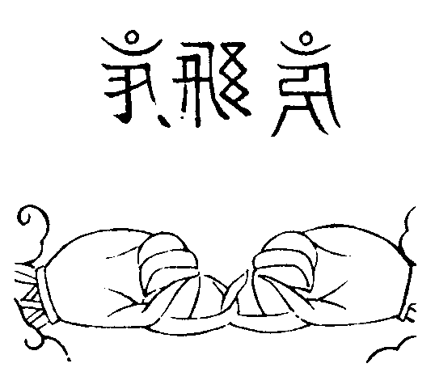
(師印呪可知。想諸佛菩薩及六道四生悉皆不現。二善根圓滿。舉天阿蘇羅藥义等偈。眾同音誦。問。既是奉送已。諸佛菩薩不現。誰為證明。答。此顯來實無來。去實無去也。三寶常住世間。且如法華經云。多寶佛塔。還可如故。而妙音菩薩來。多寶佛與塔未嘗不在也。若夫請之則實來。送之則實去。何異鬼神乎。學者思之。復念金剛薩埵百字呪三徧補闕)。
金剛薩埵百字呪
唵。斡資囉(二合)薩埵蘇。薩麻耶。麻納巴辢耶。斡資囉(二合)薩埵諦。奴鉢諦瑟劄(二合)得哩(二合)鋤。彌癹咓。蘇度束。彌癹咓。阿奴囉屹都(二合)。彌癹咓。蘇布蘇。彌癹咓。薩哩斡(二合)。戌提彌。不囉(二合)耶茶。薩哩斡(二合)。葛哩麻(二合)。蘇拶彌。稷達。釋哩(二合)揚。骨嚕。吽。訶。訶。訶訶斛。癹葛灣。薩哩斡(二合)。答塔葛達斡資囉(二合)。麻彌們拶。斡資囉(二合)癹咓。麻訶薩摩耶。薩埵阿
(此呪補闕。行者手作印不次第。觀想不專注。如是等過。悉皆清淨。復念a 阿字二十一徧。則前來能想所想一一作行皆不可得。若不如是。則墮於有為矣。所謂燄口。豈易語哉。表白舉偈。眾同和)。
施食功德殊勝行 無邊勝福皆回向
普願沈溺諸眾生 速往無量光佛剎
十方三世一切佛 文殊普賢觀自在
諸尊菩薩摩阿薩 摩訶般若波羅密
皈依三寶。上來設放瑜伽燄口平等甘露法食。功德圓滿。無限良因。普沾沙界(眾和)。和南聖眾。
修設瑜伽集要施食壇儀(終)